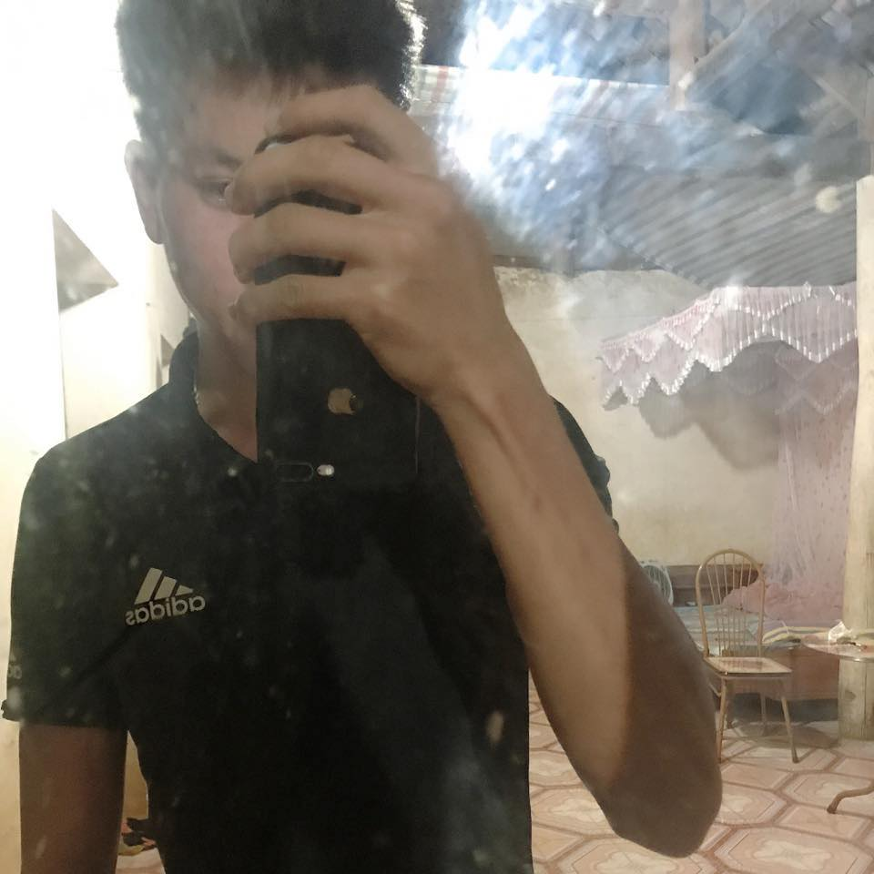

---------------------------------------------------------------------------------------------------------------
Presentation
Good morning/afternoon everyone/ladies and gentlemen
Hi, everyone. I’m Khoa Nguyen. Good to see you all
It’s a pleasure to welcome the fine there.
On behalf of add Company. I’d like to welcome you. My name’s Khoa.
I’m Nguyen Khoa , from VIETNAM
Advanced MS Office: - macros,pivot table,proche, charts, formulas, presentations, direct mail, etc.
Softwares: SAP, Microsiga, IBM Notes, ComprasNet, Petronect,etc.
Financial Skills: Financial Mathematics, Cash Flow Analysis and Cash Budget.
-----------------------------------------------------------------------------------
Academic
Bachelr's degree
Business Management
Education teaching in Management
-----------------------------------------------------------------------------------
Languages (level)
English: intermediate
Spannish: Basic knoweldge
-----------------------------------------------------------------------------------
Other Skills
Microsiga - intermediate
MS project 2007 - intermediate
MS Office XP Professional- Advanced
Sap R3 and Business One -Advanced
Professional Training Courses
Organizational Consulting - IARJ(CRA-RJ)
Cash Flow - Catho
Project Management - Catho
CRM - Catho
MS Project 2007 - SENAI
Business Budget - Catho
Human Resources - FGV
Technical Projrct Managetment - FGV
Financial Analysis and Planning - SEBRAE,
-----------------------------------------------------------------------------------
Professional Experience
Sep/09 - Nov/09 Company: Fiotec - Health Foundation
Function: Technical Assistant (Buyer)
Purchase(consumables and laboratory and operational equipments) and service procurement, based on the Law 8666 and
its own regulations, conducting consultations and negotiations wiht suppliers from various states, to serve the executed
projects by FIOCRUZ;
Acquisition through purchases in the trade(goods of low costs),made the price(value interrmediate goods) and competition